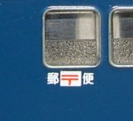
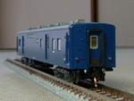

客車(郵便車・荷物車・合造車)

|
ワキ8000・スニ40(2014年11月落成)荷物輸送の近代化が進んできました? |
スユニ61(2008年9月落成)スユニ61です。実車はスユニ50に追われる身でしたが模型は立場逆転してます。 |
|
|  |
郵便車たちオユ10非冷房とオユ11がメインです。郵便のインレタは、キングスホビーのものがきれいです。 |
マニ36-200(2006年2月落成)GMキットを組んだもので、スハ32改造タイプになります。床板はKATOオハフ33のものを使用し、テールライトを点灯化しました。 |
|
マニ36-300(2006年8月落成)GMキットのマニ37+RLFのコンバージョンキットで、スロ60改造タイプになります。相変わらず床板はKATOオハフ33のものを使用です。 マニ37と一見変わらない側面を変えるために、とても苦労してます。 |
|
マニ44(2006年1月落成)GMキットを組みました。あちこちいじって、自然な形で編成に組み込めるようにしました。 テールライトも点灯化しています。 |
|
|  |
スユニ50(2004年8月落成)クロスポイントの2両組みキットを組みました。スユニ60はエッチング板が組み立てを待っています。 |